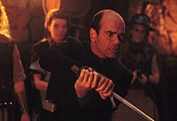
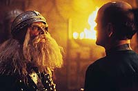
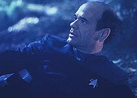
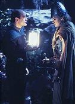
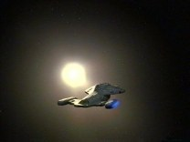

|
MANCHETE
DO EPISDIO
Doutor
ganha grande chance de
salvar o dia em aventura Viking
Episdio
anterior | Prximo
episdio
Sinopse:
Data Estelar: 48693.2.
 A
Voyager altera o curso para estudar uma protoestrela e Janeway e
Torres tentam transportar amostras de seu material fotnico a
bordo. Quando chamam Harry para ajud-las a estudar o material,
descobrem que ele desapareceu da nave.
Chakotay e Tuvok vo para o ltimo local em que Harry foi visto
--o holodeck-- e tentam descobrir o que aconteceu com ele,
interagindo com os personagens de seu programa: a histria de
Beowulf.
Os dois tambm somem quando Grendel, um dos personagem, aparece
para atormentar um cl Viking. Algum precisa se arriscar no
holodeck para encontrar os colegas. Apenas um dos tripulantes da
Voyager imune criatura: o Doctor.
 Janeway
descobre traos de converso de matria no holodeck, o que pode
indicar que os membros de sua equipe foram covertidos em energia. O
mdico hologrfico no pode ser afetado, por j ser uma forma de
energia. misso dele resgatar Kim, Tuvok e Chakotay.
Graas ajuda de Freya, uma guerreira Viking do holoprograma, ele
consegue obter dados sobre o Grendel e descobrir que ele na verdade
uma criatura viva, cujo objetivo recuparar outras de sua espcie
que foram capturadas inadvertidamente pela Voyager durante a coleta
de material da protoestrela.
O Doutor consegue devolver uma das criaturas capturadas e estabelece
um entendimento com a criatura. Ela, por sua vez, devolve os trs
tripulantes desaparecidos, que haviam sido raptados e convertidos em
energia fotnica.
Comentrios:
"Heroes and Demons" explora uma praxe
muito utilizada no decorrer das sete temporadas de A Nova Gerao:
o famoso "desbunde hologrfico". A incluso do holodeck
como potencial tema para episdios geralmente produziu bons
resultados antes --com segmentos como "The Big Goodbye",
"Elementary, Dear Data" ou "Hollow Pursuits"--
e no deixou a desejar em sua primeira utilizao em Voyager.
 Embora
no seja uma obra-prima, o episdio no deixa a desejar, ganhando
pontos em vrios quesitos. Primeiro, d nfase a um personagem,
desenvolvendo-o. O Doutor tem muito a agradecer aos roteiristas: de
uma tacada s, o holograma participa de sua primeira misso avanada,
tem o seu primeiro encontro de fundo amoroso e at ganha um nome!
Infelizmente, mais uma vez, os produtores optaram pelo famigerado
boto "reset", fazendo com que o mdico "desescolhesse"
o nome ao final do episdio. Mas ao menos eles encontraram uma boa
desculpa: a lembrana da morte da guerreira Viking que se apaixonou
por ele.
 Como
outro ponto forte da histria, podemos citar o descarte da velha
justificativa "defeito no holodeck". Embora este parecesse
ser o caso primeira vista, depois descobrimos que uma forma de
vida aliengena a responsvel pelos "problemas tcnicos"
e pelo sumio de Harry, Chakotay e Tuvok.
Por fim, no se pode descartar o aspecto tcnico: com bonitos cenrios
e excelente figurino, "Heroes and Demons" pode
figurar entre as mais belas recriaes do holodeck, ao lado da
Chicago dos anos 40 e a Londres do fim do sculo 19.
"Beowulf" foi uma escolha muito interessante para trazer
novos ares ao holodeck. Seguramente os Vikings, como os primeiros
descobridores do Novo Mundo (evidncias mostram que os nrdicos
estiveram na Amrica muito antes da "descoberta" de Cristvo
Colombo), merecem algum interesse por parte de nossos intrpidos
exploradores galcticos.
 Graas
ao carisma dos Vikings e s suas interaes com o Doutor, o episdio
permaneceu interessante e no se arrastou por um momento sequer,
apesar da meta simplista dada ao holograma mdico e do raso "holoenredo".
O holodeck e suas criaes, os hologramas, voltariam a trazer bons
frutos no futuro, e se tornariam uma pea crucial na ltima
temporada de Voyager. Infelizmente, apesar de interessante, o
recurso seria um pouco desgastado.
Pequeno destaque, quase em forma de nota de rodap, vai para
Chakotay, que, nas poucas falas que teve, conseguiu mais uma vez
demonstrar seus dotes de antroplogo, comentando com Tuvok a
fascinao dos humanos por monstros em sua literatura.
Citaes:
Tuvok - "I might point
out, there are no demons in Vulcan literature."
("Devo apontar que no h demnios na literatura Vulcana.")
Chakotay - "That might account for it's popularity."
("Deve ser por isso que ela to popular.")
Trivia:
 O Doutor chega a escolher um nome para si antes de ir ao holodeck,
dr. Schweitzer, mas o abandona ao final do episdio, por trazer
lembranas sobre a morte de Freya.
O Doutor chega a escolher um nome para si antes de ir ao holodeck,
dr. Schweitzer, mas o abandona ao final do episdio, por trazer
lembranas sobre a morte de Freya.
Sobre o episdio, Robert Picardo (Doutor), diz:
"Eu fiquei extremamente orgulhoso por 'Heroes and Demons'.
Meu personagem foi forado a fazer parte de uma situao na qual
ele teria que ser o heri e salvar o dia. Alm disso, tem um toque
de romance, algo que normalmente no vemos com freqncia em
nosso show. Gostei tambm da presena de uma bela guerreira loira
de 1,80m que contracena com meu personagem."
Ficha
tcnica:
Escrito por Naren Shankar
Dirigido por Les Landau
Exibido em 24/04/1995
Produo: 012
Elenco:
Kate Mulgrew como
Kathryn Janeway
Robert Beltran como Chakotay
Roxann Biggs-Dawson como B'Elanna Torres
Robert Duncan McNeill como Tom Paris
Jennifer Lien como Kes
Ethan Phillips como Neelix
Robert Picardo como Doutor
Tim Russ como Tuvok
Garrett Wang como Harry Kim
Elenco convidado:
Marjorie Monaghan como Freya
Christopher Neame como Unferth
Michael Keenan como Hrothgar
Episdio
anterior | Prximo
episdio
|